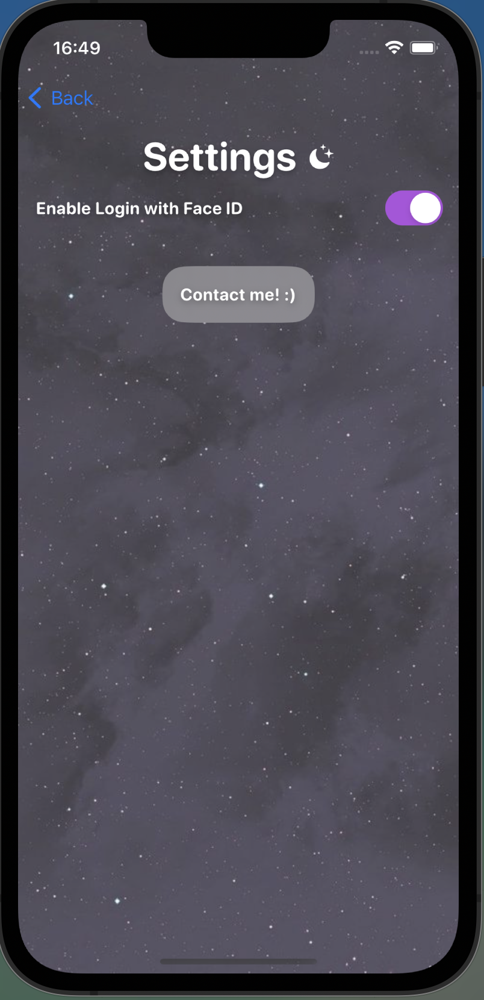
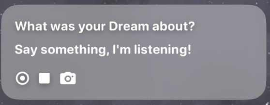
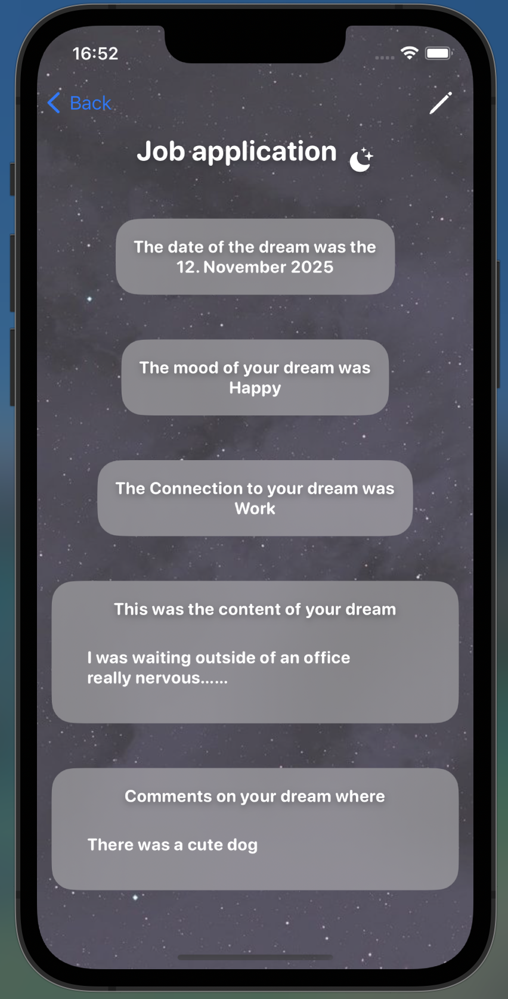

Deja Reve
Short Description
This was for a uni course for development with ios. I decided to create an app where someone can track their dreams, show what emotions and so on
Screens
Firstly, it is possible to lock the app with FaceID.

When unlocking the app, or just opening the app if no FaceId is required you get to the dream overview

From here you can change the settings
Also from the home screen there is the possibility to add a new dream


Two features I implemented here were that if adding the new dream and a description it is possible to use the speech to text or take a picture that is then being translated to text.
If the dream was added it gets added to list on the home screen, from there you can view the dream and also edit it.
If you want to delete the dream you need to swipe in the list and then there is the delete option.